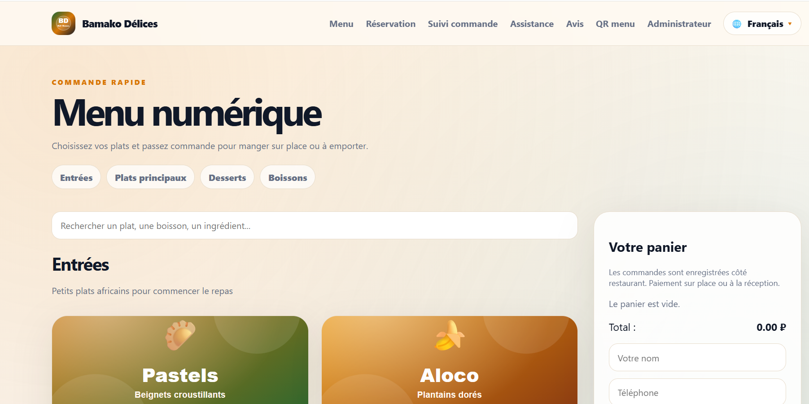
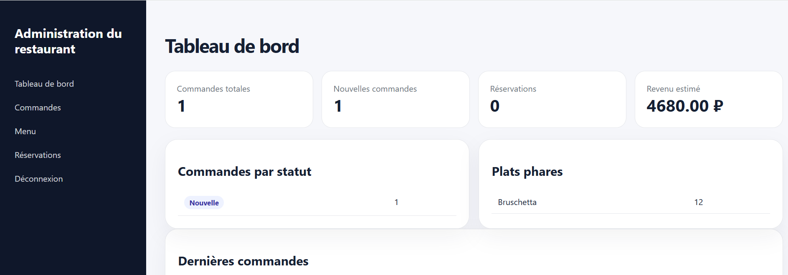
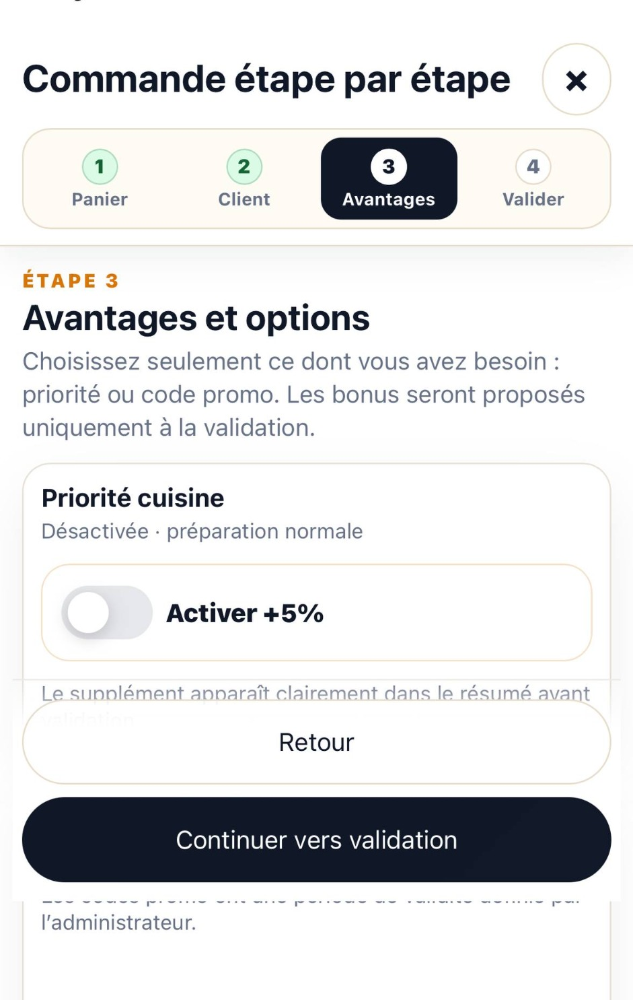
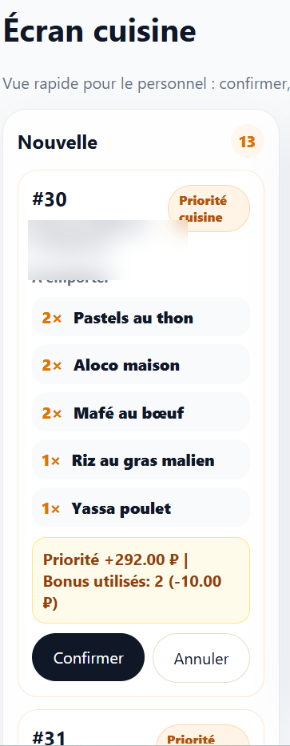

Customer ordering
Responsive menu, four-step checkout, promotions, loyalty bonuses, payments, receipts, history, reviews, and support.
OFFICIAL STABLE RELEASE · v1.0.2
Digital ordering, kitchen operations, POS, reservations, loyalty, delivery management, courier routing, and customer tracking—built with FastAPI, PostgreSQL, Docker, and a mobile-first PWA.

PUBLIC HTTPS DEMO
Open the digital menu, add dishes, complete the four-step checkout, and follow a demonstration order. Payments, SMS, and push notifications remain in demo mode. Please use fictitious personal information.
PRODUCT SCOPE
Responsive menu, four-step checkout, promotions, loyalty bonuses, payments, receipts, history, reviews, and support.
Dashboard, kitchen board, cashier, printing, reservations, menu, stock, recipes, suppliers, costs, margins, and reports.
Courier acceptance, assignment protection, route status, GPS updates, ETA, and customer-facing delivery progress.
PostgreSQL, Docker, role-based access, password security, audit events, backups, restore verification, and release gates.
PRODUCT SCREENS



ARCHITECTURE
SOURCE & COMMERCIAL USE
The complete commercial repository can be shared selectively for recruitment, code review, or partnership evaluation. This public showcase contains no credentials, customer data, backups, or strategic source code.